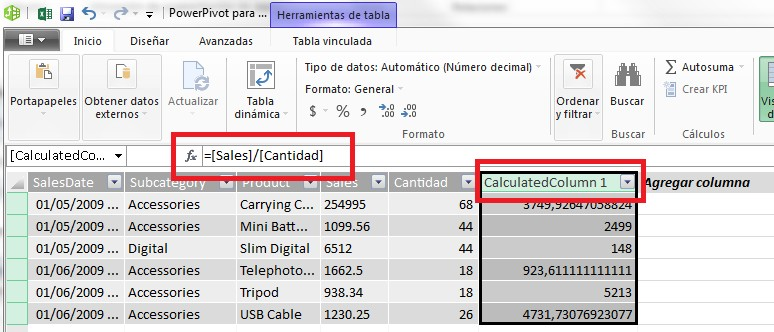
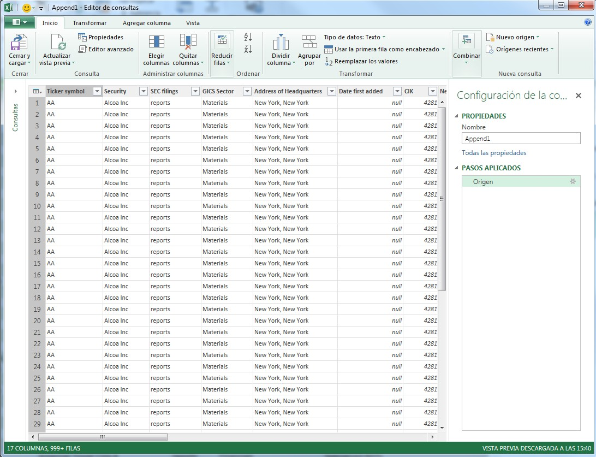
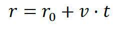
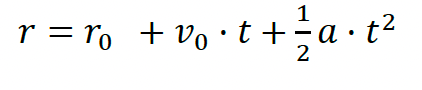

6. Crear una tabla dinámica para analizar datos
Se muestra un ejemplo, en el que se debe partir de una tabla de datos que, en este caso, será la misma de población por países, con el dato añadido del idioma principal o secundario usado en ellos. Se sitúa el foco de entrada en cualquier celdilla de esa tabla y se dispone a crear la tabla dinámica, eligiendo para ello la opción correspondiente.
Los datos sobre idiomas introducidos en la hoja de cálculo de ejemplos no son reales, simplemente se ha asignado un idioma de manera aleatoria.
Aparecerá una ventana similar a la imagen a continuación, donde se podrá elegir el rango de datos que se utilizará para generar la tabla. También se tiene la opción de recuperar los datos de una fuente externa. En la parte inferior de la ventana se encuentra la selección del destino de la tabla dinámica. Si se elige "Nueva hoja de cálculo", se creará una nueva hoja en el libro actual y se colocará la tabla en ella. Por otro lado, si se elige "Hoja de cálculo existente", se puede seleccionar una celda de una hoja existente como destino. Se recomienda dejar las opciones predeterminadas, ya que los datos se encuentran en una hoja de Excel y se desea crear una tabla dinámica en una nueva hoja.

Tabla dinámica
Se genera la nueva tabla dinámica. En la nueva hoja se encuentra (como se ve en la siguiente imagen) la tabla dinámica, inicialmente vacía y un panel de tareas a la derecha conteniendo la lista de campos o elementos que es posible añadirle. Mediante la técnica de arrastrar y soltar se puede diseñar la tabla y modificarla.

Nueva tabla dinámica
En la tabla, según puede verse, existen cuatro áreas bien diferenciadas: filtros, columna, fila y valores.
Estas áreas se corresponden con los apartados Filtro de informe, Rótulos de columna, Rótulos de fila y Valores, respectivamente, que hay en la parte inferior del panel de tareas Lista de campos de tabla dinámica.
Se puede arrastrar los campos que se quiere agregar a la tabla dinámica en cualquier momento hasta llevarlo al apartado Filtros, Columnas, Filas y Valores como se muestra en la siguiente imagen.
Campos tabla dinámica
Si por ejemplo se añade el campo País en Filas y el campo Habitantes en Valores se va a obtener una tabla en la que se encuentran resumidos el número de países y habitantes que tienen como en la siguiente imagen.

tabla dinámica
Los campos presentes en la tabla dinámica se pueden eliminar de manera sencilla, ya sea haciendo clic en el elemento correspondiente y seleccionando la opción "Quitar campo", o arrastrándolos fuera de la tabla. Del mismo modo, es posible mover los campos de un área a otra dentro de la tabla. Esta flexibilidad permite reorganizar la tabla tantas veces como sea necesario hasta lograr el resultado deseado.
En cualquier momento, es posible eliminar la hoja que contiene la tabla dinámica y generarla nuevamente. Dado que los datos originales permanecen sin cambios, se puede repetir esta operación las veces que sea necesario.
6.1 Configuración de los campos de valor
Además de los campos extraídos de la tabla original de datos, en una tabla dinámica se pueden incluir campos adicionales con información obtenida, como resultado de una fórmula creada específicamente para ello. En la pestaña "Analizar tabla dinámica" se encuentra un menú llamado "Cálculos", que ofrece diversas opciones. A través de las opciones "Campo calculado" y "Elemento calculado" en la herramienta "Campos, elementos y conjuntos", es posible agregar cualquier dato calculado a la tabla, utilizando una fórmula que involucre los campos existentes en la tabla original.
Partiendo de una tabla dinámica como la de la imagen, en la que se ha incluido el campo Continente en el área de filas y Total país en el área de datos, suponga que desea mostrar también una previsión de la población que existirá en un determinado plazo. Éste es un dato que no existe en la tabla de datos original, por lo que debe calcularse.
tabla dinámica resumen continental
Situando el foco de entrada en el interior de la tabla, se utiliza la opción Cálculos>Campo calculado para añadir un nuevo dato. En la ventana (se observa en la siguiente imagen) se introduce el título del nuevo dato y la fórmula para obtenerlo.

crear nuevo campo
En este caso, por ejemplo, se prevé que la población se incrementará en un 8 %. El resultado puede verse en la siguiente imagen, tras haber hecho algunos ajustes en formato y títulos.
tabla dinámica añadir nuevo campo
Una vez que se ha creado el campo calculado, se agrega a la lista de campos y se puede arrastrar y soltar para modificar el diseño de la tabla dinámica existente o al crear una nueva tabla que esté basada en ella.
Recuerde que, utilizando las opciones específicas para tablas dinámicas, se podrá alterar el orden en que son mostrados los datos, los títulos, formatos, etc. Algunas de estas opciones, no obstante, no son necesarias ya que pueden ser efectuadas automáticamente al generar un informe a partir de la tabla dinámica.